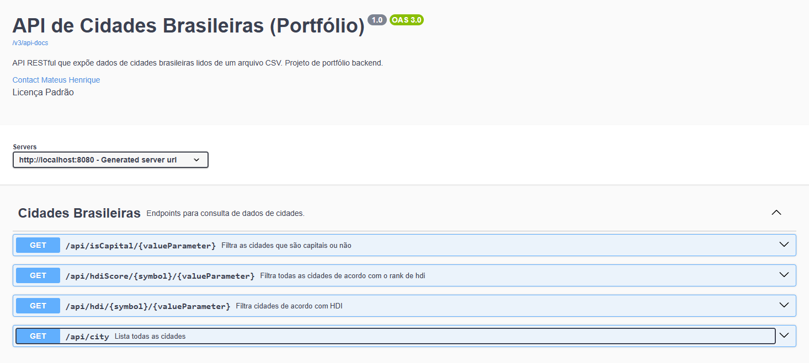
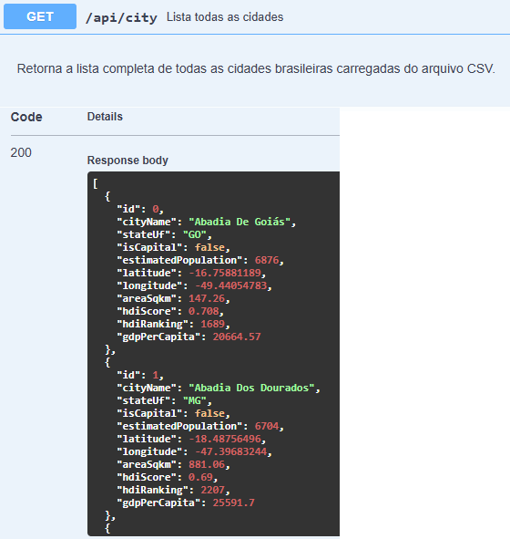
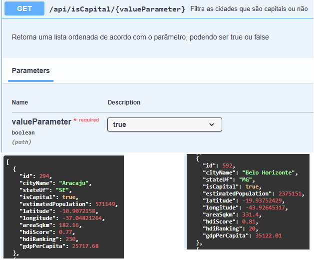
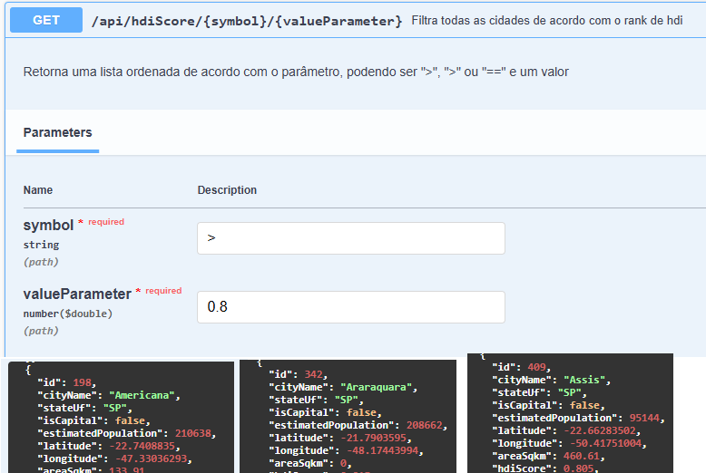
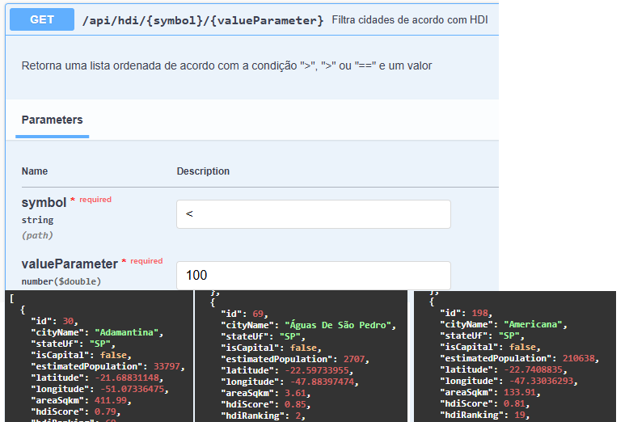

O que é o Projeto
Este projeto é uma API RESTful desenvolvida em Java com Spring Boot que processa e expõe dados detalhados de cidades brasileiras.
O principal objetivo da aplicação é demonstrar habilidades sólidas em desenvolvimento de Backend. O foco principal reside na implementação de um parsing robusto de dados não-estruturados, no design de uma arquitetura limpa em camadas e na entrega de uma documentação profissional.
A API carrega registros abrangentes que incluem População, IDH (Índice de Desenvolvimento Humano), Coordenadas Geográficas e PIB de todo o Brasil, disponibilizando-os para consulta rápida e filtrada através de requisições HTTP.
Processadas
Principais
Arquitetura
Parsing Robusto e Tratamento de Dados
Lidar com dados do mundo real exige resiliência. O dataset base do projeto, um arquivo chamado
BRAZIL_CITIES.csv, apresenta desafios comuns à extração de informações de bases brutas.
Foi essencial implementar lógicas avançadas de leitura de dados e um rigoroso tratamento de
exceções. Valores nulos ou formatos inconsistentes precisavam ser mapeados de forma segura, evitando
erros críticos como o NumberFormatException durante o processamento de índices e
coordenadas.
Principais Obstáculos Superados
- Extração e parsing automatizado do arquivo CSV utilizando a biblioteca OpenCSV.
- Mapeamento seguro e tipagem correta de informações (conversão de coordenadas e índices
econômicos para
Double). - Tratamento sistemático para valores ausentes ou corrompidos na fonte original.
- Otimização para carregar e armazenar mais de 5.500 registros na memória de forma veloz.
Arquitetura em Camadas
A aplicação foi projetada para garantir manutenibilidade e escalabilidade, seguindo o padrão clássico e eficiente da arquitetura em camadas do ecossistema Spring.
Ao desacoplar o modelo de dados da lógica de negócios e da interface web, o código torna-se muito mais fácil de testar, evoluir e compreender.
Organização do Código
Model (City.java): Define a entidade base. O uso intenso da biblioteca Lombok reduziu a verbosidade do Java, gerando getters, setters e construtores automaticamente em tempo de compilação.
Service (CityService.java): Centraliza a regra de negócio e a lógica de
carregamento dos dados. Através da anotação @PostConstruct, garantimos que a leitura
massiva do arquivo CSV ocorra apenas uma vez, no momento de inicialização (startup) do servidor,
otimizando o consumo de recursos.
Controller (CityController.java): A porta de entrada da API. Expõe os mapeamentos
REST e utiliza injeção de dependência (@Autowired) para se comunicar com a camada de
serviço de forma limpa.
Rotas, Endpoints e Documentação
Para que a API seja consumida facilmente por outros desenvolvedores, o projeto foi integrado ao Springdoc OpenAPI. Abaixo você pode ver a interface gerada automaticamente.

Mapeamentos Disponíveis
GET /api/city: Retorna a lista completa de todas as cidades carregadas em memória.GET /api/hdi/{symbol}/{valueParameter}: Busca todas as cidades de acordo com uma condição especificada (maior, menor, igual) e um valor do IDH.GET /api/hdiScore/{symbol}/{valueParameter}: Busca e classifica as cidades de acordo com a posição no ranking de IDH.GET /isCapital/{valueParameter}: Filtra cidades passandotrueoufalsepara capitais.
Demonstrações de Uso




O que aprendi com este projeto
O desenvolvimento desta API serviu como um excelente laboratório prático para lidar com o ciclo de vida de dados dentro de uma aplicação Java. Compreender como evitar carregamentos desnecessários em memória e processar grandes arquivos de forma eficiente é crucial para a otimização do back-end.
A inclusão de ferramentas padrão de mercado como Swagger para auto-documentação e bibliotecas robustas como OpenCSV consolidou a visão de que criar um software funcional é apenas metade do caminho; torná-lo profissional, documentado e resiliente a falhas é o que diferencia uma boa entrega técnica.